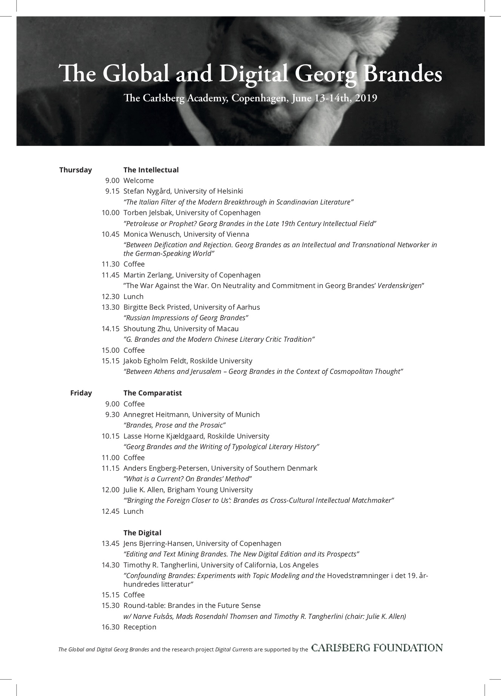

v.
The conference, June 13-14 at the Carlsberg-Academy in Copenhagen, marks the end of the Digital Currents projects, exploring and digitally editing Georg Brandes' Main Currents.... The new critical and digital edition will be launched at the conference, which also presents new perpespectives on Georg Brandes within three areas of research: Brandes as an international intellectual, Brandes as a groundbreaker within the field of comparative literature, and, finally, the scholarly opportunities, analogue and digital, which have been unlocked by the new edition of his main work.